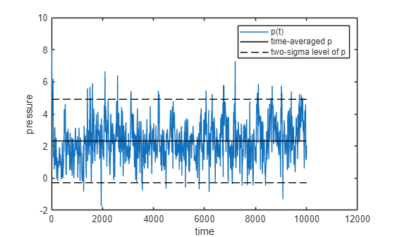
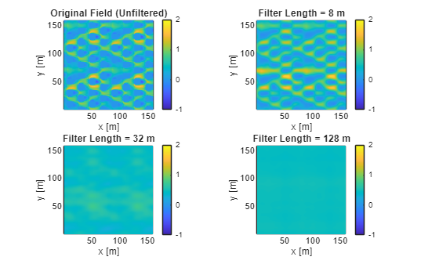

Using uDALES utilities in MATLAB¶
MATLAB path to be retired in v3.0
These tutorials currently use the MATLAB toolchain. The MATLAB route is deprecated and will be retired from uDALES v3.0 onwards, in favour of the uDALES Python package.
This tutorial demonstrates how to use the uDALES MATLAB utilities for post-processing simulation data. It covers 1) time-averaging; 2) merging short-term time-averaged data to long-term averages, and 3) coarse-graining fields for Spatial filtering (coarse-graining method). The utility functions include:
- time_average. This routine calculates the time-average of a quantity (assumes time is in the last index of the variable).
- merge_stat. This routine merges the short-term time average and (co)variance into long-term averages and associated (co)variance.
- coarsegrain_field. This routine allows you to coarse-grain a field using a planar filter in the x-y plane using a fixed lengthscale [1].
time_average: time-averaged mean and variance of instantaneous data¶
time_average function returns the mean and variance of time-series data (fields, facets, timeseries, ...). The method assumes that time is the last array index.
help time_average
time_average Time-average variables over all available time intervals
[Xmean, var] = time_average(X)
Compute the time-averaged mean and variance of X over the full
time record (time is assumed to be the last dimension).
[Xmean, Ymean, cov] = time_average(X, Y)
Compute the time-averaged means of X and Y and their covariance
over the full time record.
Inputs:
X - First variable time series. The final array dimension is assumed
to be time (e.g. size(X) = [..., Nt]).
Y - Second variable time series (same shape as X) [optional]
Outputs:
For single variable (1 input):
Xmean - Time-averaged X over the full record
var - Time-averaged variance over the full record
For two variables (2 inputs):
Xmean - Time-averaged X over the full record
Ymean - Time-averaged Y over the full record
cov - Time-averaged covariance over the full record
Examples:
[X_avg, X_var] = time_average(X);
[X_avg, Y_avg, XY_cov] = time_average(X, Y);
For example, let's load instantaneous pressure data for facets:
% preamble
clear variables
close all
% add the uDALES matlab path
addpath(genpath('path_to_udales\tools\matlab'))
% create an instance of the udbase class
expnr = 065; % Experiment number
expdir = 'path_to_experiments\065';
sim = udbase(expnr, expdir);
p = sim.load_fac_momentum('pres');
t = sim.load_fac_momentum('t');
Now, let's calculate pressure mean and variance
[pav, pvar] = time_average(p);
Plot the time-series of \(p\) together with the mean and the 95% confidence interval
figure
plot(t, p(1,:), t, ones(size(t)) *pav(1),'k-'); hold on
plot(t, ones(size(t)) *(pav(1)+ 2* sqrt(pvar(1))), 'k--', t, ones(size(t)) *(pav(1)- 2* sqrt(pvar(1))), 'k--')
legend('p(t)', 'time-averaged p','two-sigma level of p')
xlabel 'time'; ylabel 'pressure';

The function can also be used to calculated the time average and covariance of two variables. For example, let's calculate the covariance of the facet pressure and x-component shear stress \(\overline{p^{\prime } \tau_x^{\prime } }\):
taux = sim.load_fac_momentum('tau_x');
[pbar, tauxbar, ptauxbar] = time_average(p, taux);
% check output for the first facet
fprintf('The time-averaged pressure pbar=%.3f m2/s2, tauxbar=%.3f m2/s2 and their covariance p''taux''bar=%.3f m4/s4.\n', ...
pbar(1), tauxbar(1), ptauxbar(1));
The time-averaged pressure pbar=2.314 m2/s2, tauxbar=-0.032 m2/s2 and their covariance p'taux'bar=0.049 m4/s4.
The value of pbar returned by both methods is identical. Note that this example is quite exotic as we only had loaded facet data; more conventional covariances are \(\overline{w^{\prime } u^{\prime } }\), \(\overline{w^{\prime } p^{\prime } }\) etc.
merge_stat: combine short-term time average into a long-term time average¶
uDALES statistics are collected over fixed time-windows. Sometimes these time windows may be a bit too short. The function merge_stat is able to combine several of time-windows into larger ones.
Let's start with loading short-term time-averaged data, for example the 1-D plane average
% Use a different simulation
expnr = 110; % Experiment number
expdir = 'path_to_experiments\110';
sim = udbase(expnr, expdir);
Warning: prof.inp.110 not found. Assuming equidistant grid.
% load xy- and time-averaged data
uxyt = sim.load_stat_xyt('uxyt'); % u-velocity profile (z) [m/s]
wxyt = sim.load_stat_xyt('wxyt'); % w-velocity profile [m/s]
upupxyt = sim.load_stat_xyt('upuptxyc'); % u-velocity variance [m²/s²]
upwpxyt = sim.load_stat_xyt('upwpxyt'); % u-w velocity covariance [m²/s²]
time = sim.load_stat_xyt('time'); % Time coordinate for xyt data [s]
Check the averaging time interval
time
time = 3x1 single column vector
1.0e+03
2.0001
4.0001
6.0001
length(time)
ans = 3
So there are three time-averaging intervals. Long-term time averaging can be used by using
help merge_stat
merge_stat Merge short-time statistics into longer-time averages
Xmean = merge_stat(X, n)
Computes time-averaged mean for a single variable X.
Groups the time series into non-overlapping windows of length n
and computes statistics inside each window.
[Xmean, var] = merge_stat(X, XpXp, n)
Computes time-averaged mean and variance for a single variable X.
Groups the time series into non-overlapping windows of length n
and computes statistics inside each window.
[Xmean, Ymean, cov] = merge_stat(X, Y, XpYp, n)
Computes time-averaged means and covariance for two variables X and Y.
Groups the time series into non-overlapping windows and computes
statistics inside each window.
Inputs:
X - First variable time series (time in final dimension)
Y - Second variable time series (same shape as X) [two-variable case only]
XpXp - Instantaneous variance contribution (same shape as X) [single-variable]
XpYp - Instantaneous covariance contribution (same shape as X and Y) [two-variable]
n - Window length (number of time samples per averaged window)
Outputs:
Xmean - Time-averaged X in each window
Ymean - Time-averaged Y in each window [two-variable case only]
var - Time-averaged variance in each window [single-variable case]
cov - Time-averaged covariance in each window [two-variable case]
Examples:
X_avg = merge_stat(X, 20);
[X_avg, X_var] = merge_stat(X, XpXp, 20);
[X_avg, Y_avg, XY_cov] = merge_stat(X, Y, XpYp, 50);
This function needs all the short-term variables related as the input, plus an average time window. The long-term average is simply the average of the short-term averages, but the long-terms variance contains both contribution from variance in the short-term mean and the short term variance. Please ensure that the last dimension of the input must be the time, as the function merges on that dimension.
Let's start with two variables and their covariance, obtaining long-term quantities for \(\overline{u}\), \(\bar{w}\) and their covariance \(\overline{u^{\prime } w^{\prime } }\) over all three time segments:
Nwindow = length(time);
% input all the short-term variables related
[uxyt_longterm, wxyt_longterm, upwpxyt_longterm] = merge_stat(uxyt, wxyt, upwpxyt, Nwindow);
if you only need one variable, e.g., the long-term quantities for \(\overline{u}\) and \(\overline{u^{\prime } u^{\prime } }\) over all time, you can reduce it to:
[uxyt_longterm, upupxyt_longterm] = merge_stat(uxyt, upupxyt, Nwindow);
Naturally both versions return the same value for uxyt_longterm. Let's check the dimension of the short-term and long-term statistics
size(uxyt)
ans = 1x2
256 3
size(uxyt_longterm)
ans = 1x2
256 1
If you want an average over shorter window, you can an optional parameter to merge_stat::
Nwindow = 2;
[uxyt_longterm, upupxyt_longterm] = merge_stat(uxyt, upupxyt, Nwindow);
size(uxyt_longterm)
ans = 1x2
256 1
There were three intervals in uxut, and the last two were used to average over. The first time-interval has been discarded.
coarsegrain_field: coarse-graining 3D fields¶
We recently developed a coarse-graining method that is computationally efficient and can be used to coarse-grain data [1]. In order to demonstrate its use, let's load the mean horizontal velocity \(\overline{u}\) from the uDALES data.
ut = sim.load_stat_t('ut');
The coarse-graining routine has the following syntax:
help coarsegrain_field
coarsegrain_field Apply 2D spatial filter to 3D field data.
var_filtered = coarsegrain_field(var, Lflt, xm, ym)
This function applies 2D spatial (x-y) coarse-graining filters to 3D field data.
Multiple filter sizes are applied simultaneously, creating a 4D output
where the 4th dimension corresponds to different filter sizes.
Inputs
var - 3D field data with dimensions [itot, jtot, ktot] where
the first two dimensions are horizontal (x, y) and the
third is vertical (z) or time. Field is assumed periodic.
Lflt - Array of filter lengths in physical units (meters)
xm - x-coordinates of grid points (meters)
ym - y-coordinates of grid points (meters)
Outputs
var_filtered - 4D filtered data with dimensions [itot, jtot, ktot, length(Lflt)]
where the 4th dimension corresponds to different filter sizes
Algorithm
- Converts physical filter lengths to grid cell numbers (Ng = round(Lflt/dx))
- Works at discrete level with normalized periodic filters
- Uses FFT-based convolution for computational efficiency
Example:
% Apply multiple filter sizes to velocity field
filter_lengths = [10, 20, 40, 80, 160]; % Physical lengths in meters
u_filtered = coarsegrain_field(u_data, filter_lengths, xm, ym);
The routine takes in multiple filter lengths simultaneously.
filter_lengths = [8 32 128]; % Filter widths in meters
% filter the last field
u_filtered = coarsegrain_field(ut(:,:,:,end), filter_lengths, sim.xm, sim.ym);
Filter 1/1 (Lflt_x=7.5m, Lflt_y=7.5m) completed
Filter 2/1 (Lflt_x=32.5m, Lflt_y=32.5m) completed
Filter 3/1 (Lflt_x=127.5m, Lflt_y=127.5m) completed
Coarse-graining completed in 0.25 seconds
% Create figure with subplots comparing original and filtered fields
figure
k_level = 10;
% Original field (unfiltered)
subplot(2,2,1)
pcolor(sim.xt, sim.yt, ut(:,:,k_level)');
shading flat; axis equal tight; colorbar;
clim([-1 2])
title('Original Field (Unfiltered)')
xlabel('x [m]'); ylabel('y [m]');
% Filtered fields with increasing filter lengths
filter_titles = {
sprintf('Filter Length = %.0f m', filter_lengths(1)),
sprintf('Filter Length = %.0f m', filter_lengths(2)),
sprintf('Filter Length = %.0f m', filter_lengths(3))
};
for i = 1:3
subplot(2,2,i+1)
pcolor(sim.xt, sim.yt, u_filtered(:,:,k_level,i)');
shading flat; axis equal tight; colorbar;
clim([-1 2])
title(filter_titles{i})
xlabel('x [m]'); ylabel('y [m]');
end

References¶
[1] Maarten van Reeuwijk, Jingzi Huang (2025) Multi-scale Analysis of Flow over Heterogeneous Urban Environments, Bound-Lay. Met. 191, 47.